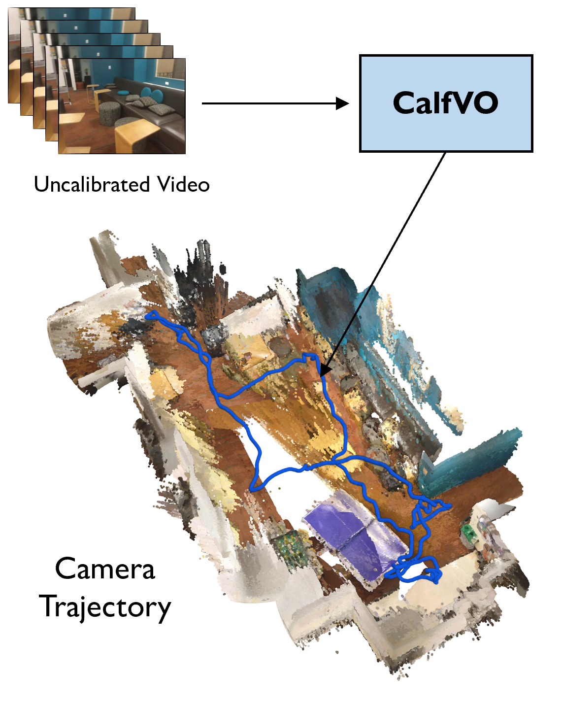
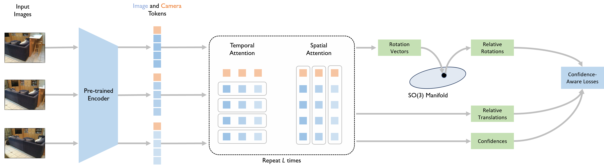

Vladimir Yugay*, Duy-Kien Nguyen*, Theo Gevers, Cees Snoek, Martin R. Oswald
University of Amsterdam
*Equal contribution

Visual odometry without calibration or alignment. Given uncalibrated video, CalfVO predicts a metric camera trajectory in a single forward pass at 53 FPS, with no camera intrinsics, no bundle adjustment and no loop closure. The trajectory is placed in the scene at the scale the network outputs, with no fitting to ground truth. The scene is rendered from ground-truth depth and is not predicted by our method.
The most accurate monocular visual odometry systems require known camera intrinsics, refine their estimates with test-time optimization, and recover trajectories only up to an unknown factor. Systems built on large 3D models need no intrinsics, but they remain considerably less accurate and slower for odometry. Direct pose regression avoids all these requirements, yet it has not matched either approach's accuracy. We revisit this formulation with a transformer that predicts relative camera poses together with separate rotation and translation confidences over overlapping image windows, supervised by camera poses alone. A confidence-weighted module then aggregates the overlapping predictions into a single trajectory. The resulting method, CalfVO, needs no intrinsics, no bundle adjustment, and no loop closure, and it recovers scale from learned priors, accurately enough that it is evaluated without any alignment to the ground truth. Across various benchmarks, it is the most accurate calibration-free method on every metric we report, and it runs at 53 FPS, faster than every baseline.

Given multiple input frames, a frozen image encoder extracts per-image token embeddings. Camera embeddings are then concatenated to aggregate the information for camera pose estimation. The embeddings are decoded by L repeating decoder blocks with temporal and spatial attention modules. The rotations are projected onto the SO(3) manifold to ensure valid relative rotations.
Trajectories estimated on held-out sequences of TUM RGB-D, which appears in training in no form, the ScanNet test split, and the SoulCity environment of TartanAir, held out in full. Trajectories are evaluated over the whole video without alignment to the ground truth.
TUM xyz
TUM desk
ScanNet 0737
ScanNet 0742
ScanNet 0750
TartanAir SoulCity Hard P002
@misc{yugay2026calfvo,
title={Monocular Visual Odometry without Calibration or Test-time Optimization},
author={Vladimir Yugay and Duy-Kien Nguyen and Theo Gevers and Cees G. M. Snoek and Martin R. Oswald},
year={2026},
eprint={2510.03348},
archivePrefix={arXiv},
primaryClass={cs.CV},
url={https://arxiv.org/abs/2510.03348},
}